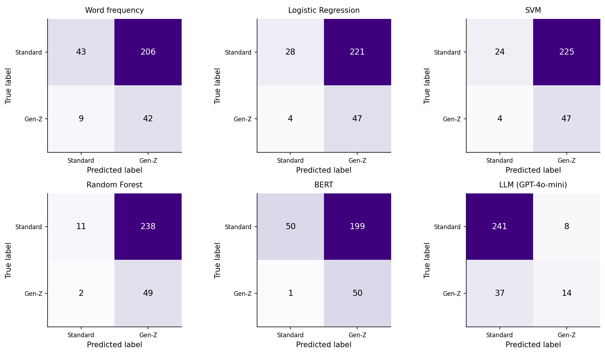
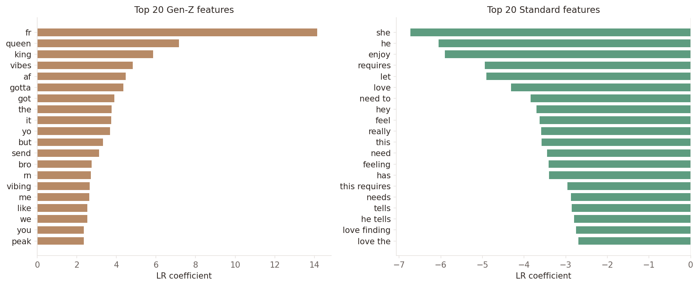

1Introduction
Gen-Z language has proliferated across the internet, yet is inadequately operationalized within sociolinguistic and NLP research. Born between 1997–2012, Gen-Z came of age alongside the rise of social media platforms, producing a distinctive generational voice characterized by rapid lexical adoption, semantic shift, and internet-native writing conventions (McCulloch, 2019). Halliday’s (1978) register theory provides the primary theoretical framework for understanding why language systematically varies across social contexts; under this paradigm, register is not merely stylistic variation, but is an adaptation of linguistics to specific social contexts. Orthographic features (deviations from standard writing conventions such as all-lowercase sentences or intentional misspelling) and paralinguistic features (non-lexical signals such as emojis) function as markers of this voice. Registers are learnable and distinguishable from each other, and are defined by the social activity they are being used in, the relationship between speakers, and the role language plays in the conversation. Functional linguistics research has extended this model to digital communication, arguing that digital interactions produce registers that systematically differ from both formal written and informal spoken language (Androutsopoulos, 2006; Biber & Egbert, 2018). Recent work has focused specifically on Gen-Z slang as a sociolinguistic marker of generational identity: terms such as “no cap” and “bussin’” function as social-deictic markers that signal group membership and generational positioning (Eckert, 2018). Despite this robust sociolinguistic characterization, Gen-Z register remains insufficiently operationalized in machine learning contexts.
Motivated by the practical need to distinguish different forms of language and voice, research on computational linguistics has developed a rich body of work on language detection. The rise of large-scale social media data has expanded the field, providing researchers with naturalistic text in which register variation is abundant, rapid, and closely tied to user identity. NLP research has demonstrated that non-standard orthographic and paralinguistic features (e.g., non-standard spelling, phonetic approximations, letter elongation, unconventional capitalization) are among the most reliable signals for distinguishing digital registers (Eisenstein et al., 2011; Eisenstein, 2015). Other studies have established that age-related language variation is detectable from text (Nguyen et al., 2021), but these papers operationalize generation as a broad demographic age band rather than as a sociolinguistically-defined register. The intersection of sociolinguistic theory and machine learning thus remains largely unexplored.
No study has systematically operationalized Gen-Z language as a classification target using multiple models. Existing work on register detection does not look at Gen-Z register; similarly, sociolinguistic research on Gen-Z slang has remained descriptive and does not utilize computational models. As Gen-Z communication increasingly dominates the online public sphere, the inability of machine learning models to identify this register limits downstream applications in content moderation, audience analysis, and sociolinguistic monitoring.
This study addresses this gap by framing Gen-Z language detection as a supervised classification problem grounded in register theory. The central research question is: to what extent can machine learning models reliably distinguish Gen-Z register from standard English? Using a curated Gen-Z training dataset as well as the r/CasualConversation subreddit for out-of-distribution evaluation, this study evaluates six classification models—a word frequency baseline, logistic regression, support vector machine (SVM) classifier, random forest model, BERT, and GPT-4o-mini—by comparing their abilities to detect Gen-Z register across both in-distribution and out-of-distribution text.
2Methods
2.1Data
Gen-Z language was sourced from a combination of three HuggingFace datasets. These datasets were chosen because they included sentence-level translations rather than a dictionary of individual slang terms, meaning models trained on them capture register-level patterns across lexical, grammatical, and stylistic dimensions instead of simple vocabulary. Dataset #1 (Shiven, 2025) was a parallel translation corpus of brainrot-style phrases that include lexical slang, orthographic features, and emojis; although brainrot—an internet-driven vernacular and aesthetic characterized by absurdism and low-quality, high-paced media—is primarily associated with Gen-Alpha (born 2010–present), this dataset was included because the boundary between Gen-Z and Gen-Alpha language is not explicit, and both cohorts participate in the same online spaces that facilitate inter-generational transmission of this brainrot slang (Mohammed et al., 2025). Dataset #2 (Gamage, 2025) extended this structure with GPT-4 generated paired translations of standard English rewritten in Gen-Z slang. Rather than including translations, Dataset #3 (GMLBtrio, 2024) was structured as a collection of terms and example sentences, therefore it contributed positive-class text only and served as the primary driver of class imbalance. Exploratory data analysis showed that 58.6% of examples were labeled as Gen-Z (n = 9,020) and 41.4% were labeled as standard English (n = 6,381); rather than applying synthetic oversampling approaches that are poorly suited for text data, the class imbalance was addressed by class-weighting during model training (Henning et al., 2023).
The merged dataset (n = 15,401) of labeled Gen-Z and standard English examples followed a minimal preprocessing protocol in order to preserve the orthographic and paralinguistic features of the original text. The corpus was divided into training (70%), validation (15%), and test sets (15%) using stratified random sampling with a fixed random seed.
| Partition | Total | Label 0 | Label 1 | % |
|---|---|---|---|---|
| By source dataset | ||||
| brainrot | 11,645 | 5,381 | 6,264 | |
| synthetic | 2,005 | 1,000 | 1,005 | |
| slang_defs | 1,751 | 0 | 1,751 | |
| By split | ||||
| Train | 10,780 | 4,466 | 6,314 | 58.6 |
| Val | 2,310 | 957 | 1,353 | 58.6 |
| Test | 2,311 | 958 | 1,353 | 58.5 |
| Full dataset | 15,401 | 6,381 | 9,020 | 58.6 |
Note. Label 0 = standard English; label 1 = Gen-Z text. DS3 (slang_defs) contributes positive examples only. | ||||
The lexicon used by the word frequency model baseline was taken from the vocabulary in Dataset #3 (GMLBtrio, 2024). This corpus was assembled from a Kaggle dataset of various social media acronyms and slang (Rizwan, 2021) as well as a TikTok-derived dataset of Gen-Z language and emojis (Cools, 2023); Dataset #3 was selected because it consolidated vocabulary from multiple curated sources, providing wider coverage while also benefiting from prior quality filtering.
2.2Model Comparison
This study compared six model types that ranged in complexity from an interpretable baseline to a black-box generative model. This gradient in text classification architectures helped to establish whether increasing model complexity yields meaningful performance gains.
1. The word frequency reference point did not learn from labeled data—it instead used the Dataset #3 lexicon for vocabulary counts. Although this method was simplistic, it served as a baseline for determining whether lexicon matching alone is sufficient for generational register detection; if the baseline performed comparably to the subsequent trained models, this finding would suggest that Gen-Z language classification reduces to vocabulary lookup rather than requiring learned linguistic patterns.
2. The logistic regression model introduced supervised learning, allowing the classifier to extract features directly from the labeled training data. The model learned a weighted combination of input features in order to predict the binary label. Term Frequency-Inverse Document Frequency (TF-IDF) features were extracted over unigrams, bigrams, and trigrams to capture Gen-Z expressions whose meaning cannot be recovered from individual tokens (e.g., neither “low” nor “key” are reliable signals for Gen-Z language, but the bigram “low key” is). L2 regularization was additionally applied to evenly distribute weight across correlated terms, improving robustness by shrinking the weights of uninformative n-grams. The output logistic regression coefficients were directly interpretable: the highest positive coefficient terms were most diagnostic of Gen-Z features in the corpus while the most negative coefficients identified the terms most characteristic of standard English.
3. A SVM classifier extended the logistic regression approach by optimizing for the maximum geometric margin between the two classes in the TF-IDF feature space. Where logistic regression fit a boundary that probabilistically explained the training labels, the SVM model classified text by finding the optimal boundary furthest from the support vectors. TF-IDF features were extracted over unigrams and bigrams, but trigrams were excluded because the loss function that SVM optimizes for provided less regularization than L2, meaning that rarer n-grams were more likely to influence the decision boundary. A Platt scaling sigmoid was applied to convert the raw decision scores into probability estimates so that the models could be comparable. If SVM outperformed logistic regression, this result would suggest that the maximum margin boundary is better suited to separate Gen-Z and standard English registers.
4. The random forest classifier took a fundamentally different approach to the classification task by aggregating predictions across a large number of decision trees that were each trained on a bootstrapped sample of the training data. This model partitioned the feature space through a sequence of binary splits, allowing it to capture non-linear interactions between features (Breiman, 2001; Denisko & Hoffman, 2018). Terms appearing in fewer than three documents were dropped from the model because they occurred too infrequently across bootstrap samples to drive reliable tree splits.
5. Rather than utilizing the bag-of-words structure of the previous classifiers, the BERT model produced a contextualized representation of the text—each token’s embedding reflected its meaning in the specific context of its surrounding text instead of its frequency across the corpus. The pretrained bert-base-uncased model was fine-tuned over three epochs to avoid overfitting (Devlin et al., 2018). Because BERT encoded contextualized representations of each token, Halliday’s (1978) register theory implies that the model was better positioned to recognize Gen-Z language.
6. GPT-4o-mini was selected as a representative and computationally-accessible frontier model. The GPT-4o-mini classifier was unique in that it received no task-specific training. Rather than learning from a labeled corpus, the AI model was queried with a zero-shot prompt and classified each text solely based on OpenAI’s model training. Zero-shot prompting (Appendix A) was chosen over few-shot prompting because it isolated the contribution of OpenAI’s training protocol. The model was instructed to return a binary label of whether an example contained “Gen-Z slang or language”; this wording was kept intentionally vague so as to allow the model to draw on its own knowledge of Gen-Z communication.
All supervised models were trained and evaluated on the same datasets in order to establish comparability. Model performance was assessed using accuracy, precision, recall, and macro-averaged F1 score.
2.3Reddit Evaluation
To measure model performance on naturally-occurring text, all six models were evaluated against a manually annotated dataset. The ground-truth annotation set (n = 300) was constructed from r/CasualConversation, a topic-agnostic subreddit dedicated to informal, open-ended discussion. This community was selected over specialized subreddits because its users write in their natural register rather than adapting to specific community norms, minimizing the risk that text describing or reacting to Gen-Z language would inflate false positives. Archive files covering 2018–present were downloaded using Arctic Shift: 2018 was chosen as the lower bound because it marked the approximate onset date of consistent Gen-Z register use on Reddit, and the dataset extended to the present day to capture the most recent Gen-Z slang. After filtering for deleted content, bot and moderator accounts, and post length, the text corpus was stratified by year to ensure temporal representativeness. The processed dataset was then sampled at an 80/20 comment-to-post ratio, prioritizing the natural conversational register characteristic of comment text over posts that are often written with greater deliberation. Items were annotated using a register-level schema that holistically operationalized Gen-Z language, assigning label 1 to items with any combination of Gen-Z slang, orthographic conventions (e.g., deliberate lowercase, absence or excess of punctuation), paralinguistic features (e.g., emojis, typed laughter), or explicit demographic detail in the text itself. Borderline cases were conservatively assigned label 0 to further reduce the risk of false positives. The resulting dataset contained 16.7% positive Gen-Z examples, establishing an all-negative baseline accuracy of 83.3% for model performance evaluation.
While the test set used in the in-distribution evaluation sampled from the same data-generating process as the training data, the annotated Reddit dataset consisted of real-world text; this naturalistic data contained sparse, mixed-register Gen-Z language features, representing a distributional shift away from the parallel translation corpora that the models were originally trained on. Model performance on the Reddit data was assessed using the same metrics as in the in-distribution evaluation: accuracy, precision, recall, and macro-averaged F1 score.
3Results
The in-distribution classification performance of all six models revealed a clear performance gradient across model architectures (Table 2). The word frequency baseline performed noticeably worse than the trained models, and its low recall of 66.5% suggested that a substantial proportion of Gen-Z language examples were not matched by the lexicon. The fine-tuned BERT model achieved the highest performance across all metrics, with an accuracy of 99.6%, precision of 99.9%, recall of 99.4%, and a macro-averaged F1 score of 0.997; these near-perfect scores were consistent with BERT’s tendency to overfit to a narrow training distribution and should therefore be interpreted with caution (Hao et al., 2019). The three sklearn classifiers—logistic regression, SVM, and random forest—occupied a narrow performance band beneath BERT, suggesting diminishing returns to model complexity when using bag-of-words approaches for Gen-Z language detection. Despite receiving no task-specific training or labeled data, GPT-4o-mini displayed performance metrics approximately in line with the sklearn classifiers; most notably, it exhibited near-perfect precision but substantially lower recall, indicating a conservative classification strategy relative to the supervised models. These in-distribution results established a performance baseline for each model, against which the out-of-distribution Reddit results were compared to.
| Model | Accuracy | Precision | Recall | F1 Score |
|---|---|---|---|---|
| Word Frequency | 0.744 | 0.868 | 0.665 | 0.753 |
| Logistic Regression | 0.940 | 0.952 | 0.946 | 0.948 |
| SVM | 0.951 | 0.953 | 0.965 | 0.959 |
| Random Forest | 0.931 | 0.954 | 0.926 | 0.940 |
| BERT (fine-tuned) | 0.996 | 0.999 | 0.994 | 0.997 |
| GPT-4o-mini | 0.942 | 0.998 | 0.903 | 0.948 |
| Note. Metrics are macro-averaged. Bold indicates the highest score in each column. | ||||
The Reddit evaluation exposed a substantial gap between benchmark performance and performance on naturally-occurring text. Table 3 shows model performance on the manually annotated r/CasualConversation dataset. Predicting standard English for all examples—the all-negative baseline—would achieve an accuracy of 83.3%; any model that did not meaningfully exceed this threshold offers no practical utility as a classifier. GPT-4o-mini was the only model to outperform this baseline, achieving an accuracy of 85.0% and a macro-averaged F1 score of 0.384. Similarly to its performance on the original test set, the frontier model retained a conservative classification behavior which proved to be better calibrated to the sparse positive rate of the Reddit dataset.
All five remaining models fell below the all-negative accuracy threshold. BERT—which had the highest in-distribution performance metrics—produced an out-of-distribution accuracy of 33.3%; its high recall and low precision indicated that the model predicted Gen-Z register for a large majority of Reddit data regardless of its actual content. The logistic regression, SVM, and random forest models exhibited a similar pattern of false positives, suggesting that this pattern in performance metrics is not model-specific. These results ultimately caution against treating benchmark performance as a reliable proxy for real-world utility in Gen-Z register detection tasks.
| Model | Accuracy | Precision | Recall | F1 Score |
|---|---|---|---|---|
| Word Frequency | 0.283 | 0.169 | 0.824 | 0.281 |
| Logistic Regression | 0.250 | 0.175 | 0.922 | 0.245 |
| SVM | 0.236 | 0.173 | 0.922 | 0.291 |
| Random Forest | 0.200 | 0.171 | 0.961 | 0.290 |
| BERT (fine-tuned) | 0.333 | 0.201 | 0.980 | 0.333 |
| GPT-4o-mini | 0.850 | 0.636 | 0.275 | 0.384 |
| Note. Metrics are macro-averaged. Bold indicates the highest score in each column. | ||||
4Discussion
4.1Main Findings
The most central finding across the results is the inversion between in-distribution and real-world performance: BERT achieved the highest test F1 score but was unable to extrapolate to naturally-occurring data. BERT’s near-perfect in-distribution performance suggests the model achieved high benchmark scores through exploiting surface-level features in the training data instead of learning underlying linguistic constructs. Contrastingly, GPT-4o-mini was the only model to outperform the all-negative Reddit baseline despite mediocre performance on the in-distribution test set. Although this finding cannot be directly verified due to GPT-4o-mini being a closed model, the out-of-distribution performance of the frontier model suggests that LLMs acquire implicit register knowledge through pretraining on internet-native datasets. These contrasting out-of-distribution performance evaluations are made clearer when comparing GPT-4o-mini’s conservative classification behavior against the indiscriminate positive-class bias exhibited by the other classification models; their high false positive rates (Figure A1) thus reflect their inability to distinguish registers.
Furthermore, the consistent in-distribution performance among the trained models confirms that Gen-Z register detection is feasible when training and evaluation data are drawn from the same corpus. The narrow F1 band among the three sklearn classifiers (0.940 − 0.959) signals that, when using bag-of-words methods, the exact choice of classifier architecture has relatively little bearing on performance. Moreover, if model complexity is the primary determinant of generalization, BERT should have outperformed the bag-of-word methods on the Reddit data; instead, the performance collapse of all trained classifiers on the Reddit corpus points to a systematic mismatch between the training data and the deployment context. Rather than any individual model being the driver for failing to generalize to Reddit, the training corpus itself is not naturalistic enough for the models to extrapolate to. Online Gen-Z communication is ultimately more variable than the curated training set of register-dense examples suggests.
In addition to the findings about model generalization, the results are consistent with the register theory: Gen-Z language is not defined by a fixed vocabulary but by a unique configuration of sociolinguistic features. Halliday’s (1978) three-dimensional register model helps explain why the trained classifiers could not generalize: the training data captured the stylistic features of Gen-Z register but not its social context or the relationship between speakers. The word frequency baseline failed to detect register because Gen-Z lexicon is confounded with standard English (e.g., “slay” can mean to literally kill or to be fashionable). The logistic regression feature importance analysis (Figure A2) supports this interpretation, with ambiguous terms such as “it” and “you” emerging as highly-weighted Gen-Z features despite their presence in both registers. Gen-Z language is therefore not a simple enumerable lexicon, but is instead a learned combination of features.
Overall, these findings show that benchmark performance on a curated translation dataset is a poor proxy for naturalistic Gen-Z register. The paired translation structure of the training data ensured that every positive training example was maximally Gen-Z, limiting the classifier models’ exposure to the type of mixed-register text that is most representative of the real-world. The dataset’s class imbalance compounded this saturation effect: because Dataset #3 contributed positive-class examples only, the majority Gen-Z label distribution was driven by a corpus of slang definitions and example sentences that represented the most register-dense form of Gen-Z language, further biasing the models away from the naturalistic, mixed-register text they would encounter when deployed. Although the classification results validate the theoretical framing of Gen-Z language as its own distinct register, the available training data only captures the most concentrated form of this language. These results collectively reframe the model comparison question—rather than asking which architecture best detects Gen-Z register, the more salient question is which dataset structure best prepares a model for practical implementations.
4.2Limitations
4.2.1Data Constraints
The central limitation of this study is its reliance on matched, publicly available Gen-Z language datasets. Because such data is limited, the chosen HuggingFace datasets were selected under significant resource constraints, introducing potential issues to the quality and representativeness of the training corpus. Despite prior work indicating that Gen-Alpha brainrot slang has diffused into Gen-Z vocabulary (Mohammed et al., 2025), Dataset #1 still skews toward hyper-online language, and models trained on it may perform worse on subtler, more conversational register features. Similarly, the AI-generated parallel pairs in Dataset #2 may represent a sanitized version of Gen-Z register that does not reflect how the language is actually used in applied settings. Beyond the shortcomings of individual datasets, the parallel translation structure shared across all three corpora introduced a further restriction to model training: every positive example is maximally Gen-Z, an artificial saturation which fails to reflect naturalistic usage. The collapse in Reddit performance is thus a direct consequence of the structural gap between the saturated language of the training data and the mixed-register, naturalistic text found on Reddit.
In addition to the Gen-Z data used to train and evaluate the original models, the Reddit annotation set introduces its own constraints to the validity of the out-of-distribution evaluation. Annotation was performed by a single rater with no inter-rater reliability measure, meaning that label boundaries may not be fully reproducible. Without inter-rater calibration, the single-annotator labeling is also likely to have introduced systematic bias into the dataset. The relatively small sample size of n = 300 further reflects the practical limitations of the annotating methods used. More broadly, because the evaluation is drawn from a single subreddit, the findings cannot be generalized to the entire Reddit platform or to online language more generally. These data constraints highlight the importance of treating the Reddit evaluation findings as preliminary instead of definitive, and they also motivate future work with larger annotated datasets, multi-annotator reliability studies, and training corpora drawn from naturally-occurring text.
4.2.2Model Comparability Challenges
Several limitations affect the comparability of the six models and influence how performance differences are interpreted. Most fundamentally, the models deployed vastly different machine learning classification methodologies: the word frequency baseline utilizes a fixed lexicon without any training; the logistic regression, SVM, random forest, and BERT models use training data to learn parameters; and GPT-4o-mini is queried with zero-shot prompting and without any exposure to labeled data. Observed performance is therefore difficult to interpret because it reflects not only differences in model architecture, but also variation in the ways these models learn to classify data. Comparability is further complicated because the six models draw upon different feature spaces: the sklearn classifiers operate on TF-IDF vectors, BERT on WordPiece tokens, and GPT-4o-mini on raw text from a natural language prompt. Because these are not equal representations of the same input, performance differences between model families cannot be attributed to architecture alone.
In addition to these architectural and feature differences, the inclusion of a frontier model in the study complicated direct comparison with the traditional classifiers. Unlike the four trained models, GPT-4o-mini was not exposed to labeled training examples, meaning that its performance solely reflected the quality of its OpenAI pretraining knowledge and not its ability to learn from task-specific data. Furthermore, no systematic prompt ablation was applied to the prompt provided to GPT-4o-mini, meaning that the results for this model reflect a particular operationalization of the classification task.
These comparability challenges do not invalidate the model evaluation method but do, however, constrain its interpretation. Performance differences across models should be read as an exploration of different methodologies of register detection rather than as a controlled experiment that isolates the effect of specific model configuration decisions.
4.3Future Directions
The absence of naturally-occurring Gen-Z language in the training corpus is the primary constraint on the models’ generalization performance. The three available HuggingFace datasets are currently the best publicly-available resources, but their matched translation structure is not fit to produce models that are able to generalize to naturalistic text. Future dataset construction should prioritize naturally-occurring data with sparse, mixed-register features. A more representative training corpus could be constructed by sampling and annotating posts from Gen-Z-dominated social media platforms such as TikTok and Instagram; rather than serving as an out-of-distribution evaluation set, labeled Reddit text could then function as the primary training data.
Alongside improvements to the training corpus, methodological improvements would strengthen both the evaluation framework and the generalizability of the findings. The single-annotator Reddit evaluation should be extended to a multi-annotator design with a formal inter-rater reliability measure; this schema would alleviate the training distribution mismatch as well as provide a more robust ground truth for future model evaluation. Sampling from multiple subreddits with contrasting demographic and topical profiles would also improve the representativeness of the dataset. Resolving these data constraints is a prerequisite for models to be able to reliably generalize beyond the training distribution.
The relative success of the zero-shot GPT-4o-mini model also motivates a shift in modeling focus, and future directions should prioritize frontier models over architectural refinement of traditional classifiers. Systematic prompt ablation for GPT-4o-mini would establish whether the results of this study reflect the model’s best achievable performance or a particular operationalization of the task; few-shot prompting with naturally occurring Gen-Z text could also improve the model’s sensitivity to sparse Gen-Z language features. More broadly, comparing multiple frontier models—including open-weight alternatives—would allow for more precise characterization of the LLM advantage.
5Conclusion
This study provides the first systematic multi-model comparison of Gen-Z language detection, grounded in register theory and evaluated under both in-distribution and out-of-distribution contexts. GPT-4o-mini’s ability to generalize to naturalistic text supports the notion that frontier LLMs gain implicit register knowledge from pretraining. The degradation of simpler models under the domain shift confirms that Gen-Z language is not reducible to a lexicon but is instead a combination of sociolinguistic features. Future work should address the mismatch between the training and Reddit datasets by developing a naturalistic, mixed-register corpus that better reflects how Gen-Z use language in real-world contexts. Ultimately, this study demonstrates that the gap between sociolinguistic theory and computational methods is a barrier to building models that reliably generalize to real-world conditions.
Appendix A: GPT-4o-mini Prompt
Classify whether the following text contains Gen-Z slang or language.
Respond with ONLY the digit 0 or 1. Do not include any other text, punctuation, or explanation.
1 = contains Gen-Z language
0 = does not contain Gen-Z language
Appendix B: Figures


The code appendix from the original submission is available in the GitHub repository.